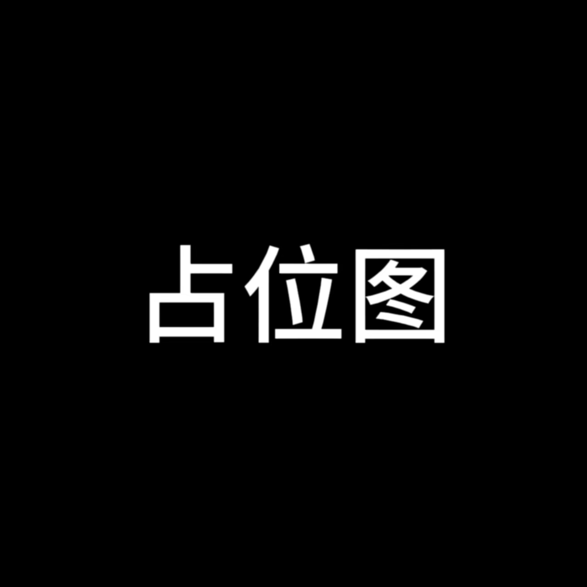
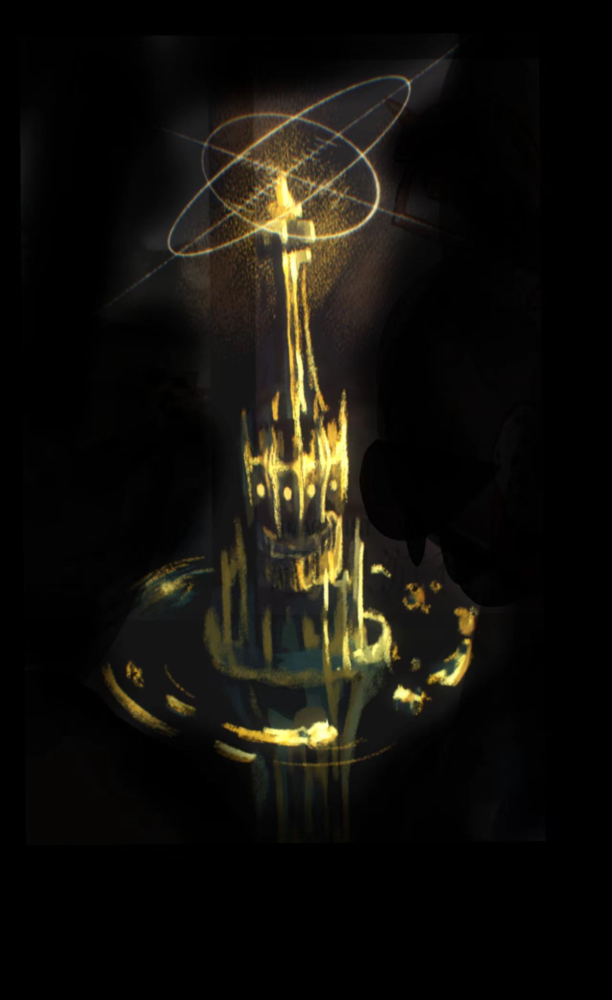
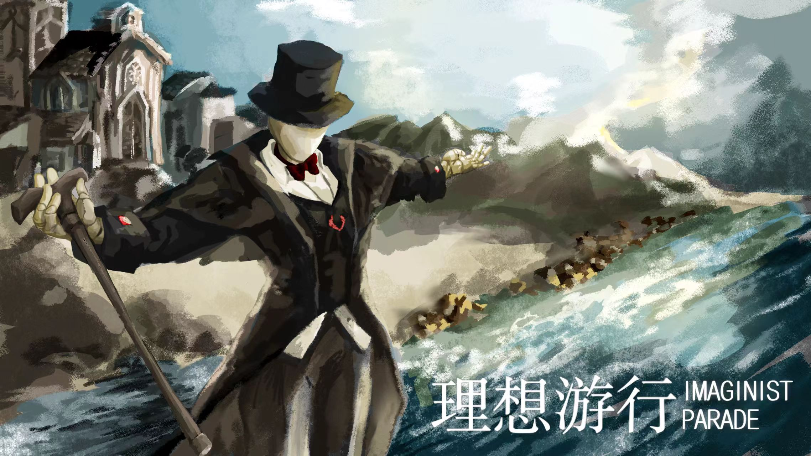
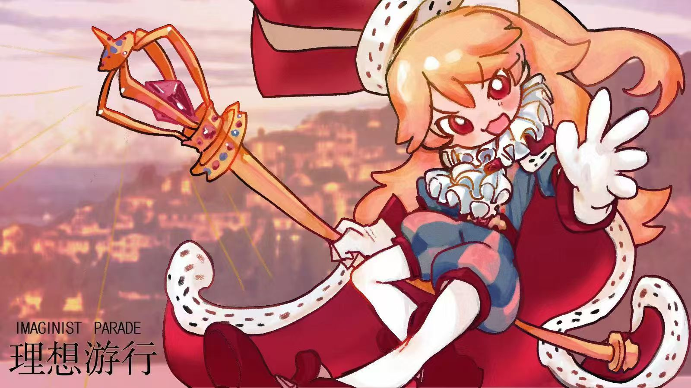
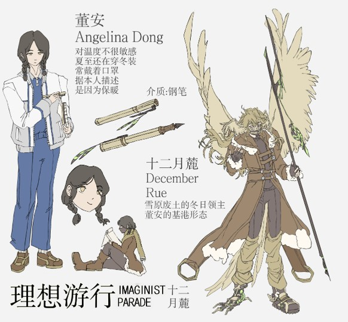
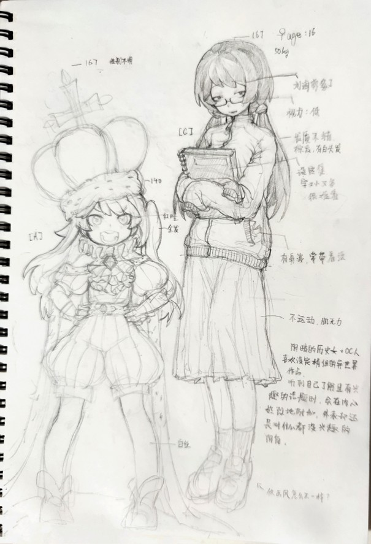
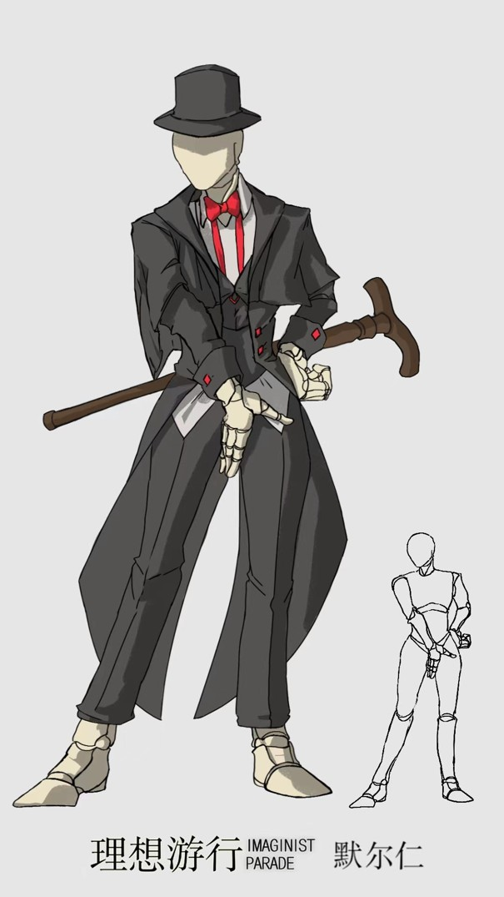
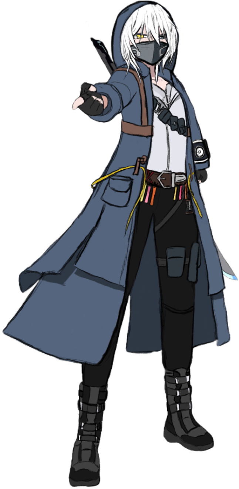
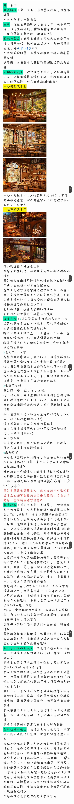

“从黎明中带来火种，在恐惧的风暴中消逝
在伊甸的星河醒来，我们将永远是匆匆而过的旅人”
▼向下滑动
何为“理想游行”
在名为基港的里世界，背负生活重担、寻得心中重要介质的独行之人，
便能踏入这片以梦为基石的避风港，成为理想家，在枢轴塔的力量下开辟独属于自己的理想邦国，托付造梦人代为守护；
无边的无限雾海潜藏着妄图侵蚀一切的魔物，所有邦国放下隔阂同心御敌，在时间流速迥异的梦境天地里，理想与思念凝成抵御苦难的灯火，
这场穿梭于现实与幻梦之间、守护心灵栖居之地的旅途，便是理想游行
深入世界

基港[Pavers Bay]
在这个世界中，有一部分满足一定条件的，在生活重担下独行的人能够以对自己有重要意义的物体(介质)为媒介进入这个现实之外的里世界，并拥有属于自己的一块应许之地，这样的人被同类称为“理想家”，他们的土地被称为“理想邦国”理想家们称这个里世界为“基港”，意为以梦为基石的避风港。

枢轴塔[Core]
整个里世界是基于一座名叫“枢轴塔”的高塔来运行的，每个理想家在三次元世界中拥有的介质与枢轴塔发生共鸣后，会在枢轴塔周围的无尽雾海里开辟出新的理想邦国(Reveration)。邦国的核心，即介质核(Reveral Nucleus)是介质引导并加固的一部分枢轴塔力量凝结的造物，通常为理想家居住的建筑，有特点的植物或小片水体.邦国的面积大多相似以介质核为轴心创造出的新陆地即该理想家邦国的面积，因此这个世界里没有领土纠纷。介质核与枢轴塔有极强联系，理想家从介质核可以直接传送到枢轴塔的公共
塔台，并从塔台传送到基港范围内的任何地方。
枢轴塔的本质是无法接受现实生活苦难而崩溃的，或是一生孤独渴望温暖的人们逝去后希望和自己遭遇相同的人获得救赎的遗志打破次元壁，凝结成的在雾海中开辟港湾的灯塔。

造梦人[Dreambuilders]
是理想家在现实生活中无法抽身的时候，代替他们对邦国进行管理的理想造物。他们是由理想家原本想象中的角色投射在基港中的人物。一位理想家的邦国中有三到七位不等数量的造梦人。造梦人对魔物有一定的战斗能力，因此也担负一部分的邦国守卫职责。理想家不在基港的时候由他们负责向其他邦国发起求助信号.
无限雾海[Everfog]
基港和邦国都是被浓浓雾海环绕的土地。无限雾海是基港的敌人，它被枢轴塔的力量抑制而无法侵犯逐渐半富扩大的理想家。基港。同时雾海是孕育魔物的基地。魔物根据雾海侵蚀的目标不同分为多种类型，不过它们的根本目的都是攻击邦国，破坏枢轴塔，使雾海席卷这个世界.
界生四象[The Four Forces]
与其说是势力不如说是集合。由枢轴塔的朝向，塔将不同理想家的邦国划分在合适的集合里。玄幻修仙类的世界观在东方，西幻和克系的世界观在西方，北方是科技朋克和废土荒原世界观，南方是日常系和没有法术异能设定的纯物理世界观。
核律法[Nucleual Laws]
理想家借由介质核在自己邦国范围内设置的特殊法则。鉴于邦国的设定原因，为了使邦国的平民能与其他邦国的不同物种较为便捷轻松的相处，在某国居民踏入其他邦国领土的瞬间便会受到该邦国核律法的限制。核律法的权能包括但不限于使外来者产生一定的外貌改变(如体型缩小，服装变更，种族变化等),限制飞行或水下呼吸等特殊能力(对他国理想家的该限制可在魔物来犯时解开)但不会改变外来者的战力点数和原本的战力点分配。

武器[Weapons]
造梦人的武器与普通基港人的武器有所不同。他们使用的是由介质幻化成的特殊武。器。带有三次世界介质的特征。(类似于人穿越里世界会变身自设或ac，你的重要物件也会变身)。
意象册录[Imagist Album]
董安

外貌比较普通，黑毛金瞳，平时扎双麻花或者单马尾。对温度不是很敏感，随身携带一个画本和一支绑着两根虎皮鹦鹉羽毛的旧钢笔。平时话不算多，但是谈起来幻想和游戏会滔滔不绝。没有人聊天的时候会感到孤独。
麓
十二月的雪原废土再次下起了雪，这倒是习以为常了，毕竟几乎终年都是这样，在覆盖积雪的荒漠之中，有一串奇异的脚印，那脚印一边是鞋，另一边则是鸟爪，顺着脚印前进，两边出现血迹，紧随而至的是魔物们的残肢断臂，而在脚印结束的地方是一只魔物，它正被一只大鸟按在地上用一根权杖穿刺。当魔物彻底停止呼吸时，大鸟站了起来，双翼张开，上面的血滴飞溅开，此时露出了它的真实面貌。
不...那不是鸟，而是永霜冻土的冬日领主：
天衡月影———十二月麓
周一诺

阴暗的历史女+OC人，可能是因为自己是阴角的缘故，导致外表看起来对什么都不感兴趣，很少运动导致肌无力，视力也不好，不过当听到自己了解且有兴趣的话题时，会在内心热烈地附和。
其实，很喜欢设定精细的异世界作品，而且总是抱着一本自己写的设定集，字又小又多很难看，但她依旧看得痴迷，或许这本书里真的有什么魔力....
帕里米三世
遥远的西方王国，有一位勇敢的王储，发誓为她的子民带来和平，她的做法令人惊异，她踏足了前人未敢触及之地，面对雾海中无人能驯服的猛兽，王储无所畏惧，毫不动摇，她以血为誓，要终结所有战争与魔物，随后，这名英雄为人们带来了邦国的黄金时代。
现在，诸位，请恭喜这位王储加冕为王，让我们有请:
烈日风暴———帕里米三世
阿暮

少年身着淡蓝色短袖与黑色短裤，安静坐在书桌前，指尖轻轻抵着摊开的课本，窗外的日光落在他发梢，只是普通高中生的模样，沉静地守在这个平淡日常里。
默尔仁
深夜，他从书桌前站起来关上所有的灯。伸了个懒腰，走向床上。转身闭眼倒在床上，在陷入床体的瞬间，他身着老旧的西装与披肩，面容如木偶般光滑，西装的下摆在疾风中猎猎作响，他正自高空向着下方的小城坠落，少年在空中调整姿态，身躯如鸦羽一般缓缓落在教堂的尖顶，他用自己的硬木手杖稳住身形，并抬手接住飘落的礼帽。当钟的指针指向顶点，发出清脆的响声那一刻，少年从容行礼，而后将礼帽戴在头上。
“当心吧各位，黑鸦要振翅了！”
暗黑幻影———默尔仁
荷斯
喧闹熙攘的广场原本满是往来行人，骤然炸开的火光撕裂了片刻安宁，热浪裹挟着烟尘向四周漫开，火光的阴影里，戴着小丑帽的男人抬臂，将大把扑克抛向高空，一张张纸牌悠悠旋落，如同漫天飘零的碎羽，就在纸牌缓缓坠向人群的间隙，男人的身影随之消融，彻底消失在这片弥漫硝烟的广场之上。
另一边，在阴暗的小巷里，小丑默默靠着墙，左手托着铜制天平，右手的匕首上鲜红的液体一滴一滴的向下渗，旁边的地板上趴着一具尸体。突然间，他像是感应到了什么，身体微微一震，开始渐渐消隐，当他完全消失后，只留下三颗金币掉落在地上，发出沉闷的碰撞声。
恶戏者———荷斯
夏清
男高中生，外在气质开朗，不爱体育运动，常留着偏长的头发，身材中等偏瘦，身高也是中等，外貌不出众，平平凡凡，有心理重疾却从不在外表现出来，自己一个人住，不管在家中还是在外，永远是那个最不起眼的人，一直在学习之外的时间研究医学，生物学，植物学等知识，周末其中一天会去父母家吃晚饭，对于他来说这是生活中最难熬的时候。
歖
桥头岸上，人影婆娑
小儿驳船经过，船首推浪层层波
思恋几何多，故人足下，澈湿衣裝
夜雨连绵，人世蹉跎
碎玉盏碗铜锣，鱼灯点影锵锵钵，憾事犹未果
今人回首，寂若山火
遗世独行的旅人们啊，我为你们祈福，愿我能治愈你们，引领你们，照亮你们的前路
天已放晴，一起前往未来吧。
甘霖清雨———歖
青云

“他妈也就是说，现在轮到极品魔物猎人登场了！”
落叶逐火———青云
